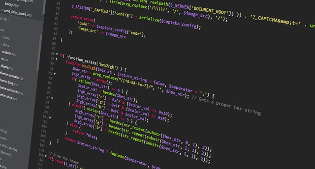

Front-end developer tools
Day 1 - Git and Github
Today we learned about Git and Github. We also had an overview of using the command line. It was quite comprehensive. We learned that using github we can work in teams on a same project. We can pull each other’s project and push to the main repository, which is where the project sits. Also it’s possible to create multiple branches and come back to earlier versions of the project.
Day 2 - node.js development tools
Today we learned about Node.js development tools such as Gulp, Node Package Manager and Yarn and saw how they can help to automate and speed up the development workflow. We saw how to install node.js, which is a runtime environment that can run JavaScript on the server. We installed Node Package Manager and installed dependencies such as Jquery and also a browser window, which automatically update itself: “browsersync”. Emiliano recommended that we start using these tools as soon as possible so that we can become used to working with them and also because they can greatly help our workflow.
Day 3 - Responsive web
Today we learned about mobile responsive design in other words how to style a website so that it works on multiple screens. It’s interesting that nowadays there are so many different screens available from large desktop computers to handheld phones and web sites and applications need to have a coherent format that works on each screen. There are many techniques to do that. We learned to use CSS grids to create responsive grids. Also there is a way of loading different pictures to fit different screens. The main technique to apply different CSS rules to different screens is to use media queries, which specify for which screen width specific CSS rules apply.
Day 4 - SASS
Today we learned about SASS which is a new way to write CSS. SASS code gets compiled into CSS. It seems more flexible than CSS because you can create variables and loops and other interesting techniques like mixins. CSS by itself can be a bit too repetitive but SASS looks like a programming language for CSS, which looks more powerful.
Day 5 - Bootstrap
Today we learned about Bootstrap and how to create interfaces with it. It seems quite straightforward to use and also quite useful and comprehensive.